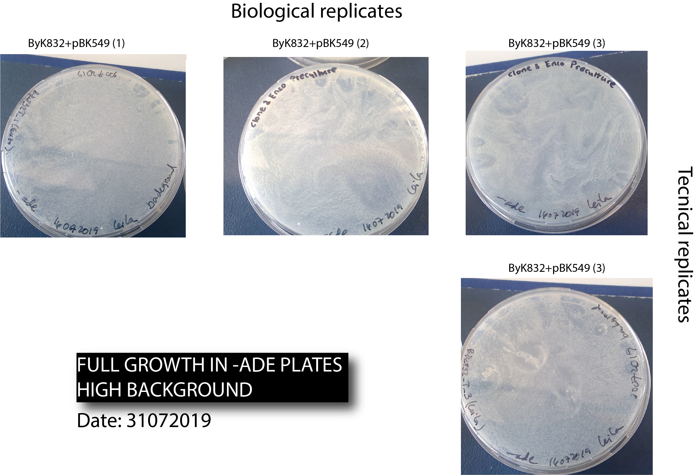
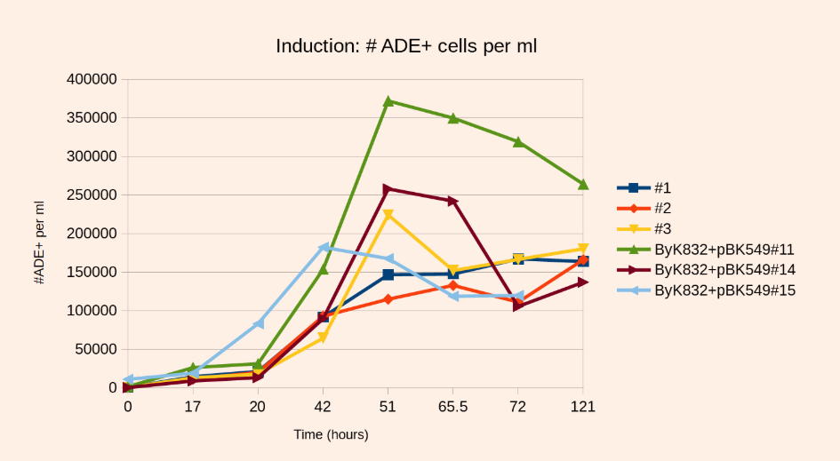
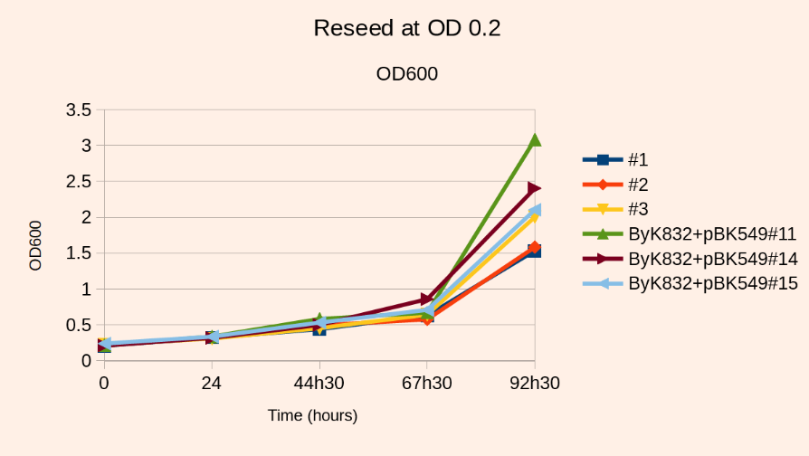

4. Title: 29072019-SATAY 1st attempt with Byk832-T :pray: :confused: :x:¶
4.1. Date¶
Tuesday, 29072019 - 31072019
4.2. Objective¶
To learn about the whole technique and detect the main issues and bottlenecks when used it for the target strain.
4.3. Method¶
Streak the chosen Byk832 transformed cells that display full growth in -URA and medium growth in -ade, in -ura.
Pre-culture step - 29072019 :clock230: (14:30) :blush:
Scrape cells from SD-URA, inoculate 20-30mL SD-URA 0.2% glucose +2% Raffinose at OD600=0.16-0.24 (OD=0.06 works as well)
it is more than one cell, just take with a pipette tip many cells and put them in a eppi with 1ml MiliQ
Measure the OD of a 100x diluted stock (10ul of diluted cells + 990ml MiliQ)
| Strain | OD (100x diluted) | |---|---| |Byk832T_1 | 0.15 | |Byk832T_2 | 0.24 | |Byk832T_3 | 0.20 |
Dilution to OD=0,2 to a final volume of 20mL
Enzo did three flasks more , as technical replicates.
Incubate at 30C, 140-160 rpm, to OD=4-6 (around 20h)
Started at :clock230: (14:30) :blush:
It is recommended to start with 3-4 precultures and later chose which to reseed in SD-ADE 2% Glucose.
4.3.1. Benoit Data¶
Strain |
OD start |
OD STOP |
Time |
|---|---|---|---|
strain # 3 |
0.235 |
3.85 |
20h |
strain # 5 |
0.229 |
3.94 |
20h |
strain # 2 |
0.233 |
4.02 |
20h |
strain # 4 |
0.227 |
4.04 |
20h |
strain # 6 |
0.235 |
4.07 |
20h |
strain # 1 |
0.234 |
4.33 |
20h |
4.3.2. Our data¶
Strain (2 technical replicates) |
Preculture |
||
|---|---|---|---|
OD start (29072019-:clock230: -> 14:30) |
OD stop (~2X higher |
Time |
|
Byk832T_1(Leila) |
0.19 |
~ 12.6 |
19h |
Byk832T_2 (Leila) |
0.14 |
~11.2 |
19h |
Byk832T_3(Leila) |
0.17 |
~ 10.8 |
19h |
Byk832T_1(Enzo) |
0.19 |
~ 8 |
19h |
Byk832T_2(Enzo) |
0.14 |
~ 10 |
19h |
Byk832T_3(Enzo) |
0.17 |
~ 9.7 |
19h |
Induction
Inoculate 200ml SD-URA 2% Galactose at OD600=0.2 from the saturated preculture.
We choose base on the OD values Byk832T_1(Enzo),Byk832T_2(Enzo), Byk832T_3(Enzo), and Byk832T_3(Leila) forthe induction in 150mL of media
Incubate at 30C , 140 to 160 rpm for 50-52 hours
30072019-:clock1030: -> 10:30 start T=0 of induction.
To evaluate the background:
[x] Spread 200ul of this inoculum on SD-ADE
[x] Dilute the inoculum 1000x, spread 200ul on SD-URA and SD complete
score after 2 days:
[x] :pensive: Expect ~200-400 ADE+ clones/mL culture (~ 40-80 clones for 200ul), i.e. ~0.01%-0.02% of the total number of cells. These are cells that repaired the ADE2 gene by homologous recombination WITHOUT transposition
The plates next morning had easily more than 200 colonies , which means 5 times more than indicated for Benoit.

Reproduce the following plots, with the chosen technical replicates for induction: 
- Step 1: At the time of induction we plate 200ul from the induction culture at OD=0.2
We could not plate at T=0 from the induction culture, because we did not have enough plates.
- Step 2: Next day morning repeat Step 1 (17 hours)
31072019 - We aborted this attempt because of a high background
- Step 3: 3 hours later repeat Step 1 (20 hours) - Step 4: Next morning repeat Step 1 (42 hours) - Step 5: Same day afternoon , repeat Step 1 (51 hours) - Step 6-8 : Every morning Step 1, for 5 days more.
The OD should have reached 4-5 after 20h of induction.
Measure OD , next day after induction.
In order to know how well the transposition is going before reseeding:
Spread 200ul directly on SD-ADE
Spread 200ul of a 40000X dilution on SD and on SD-URA
Score under a binocular after 30h (i.e. closer to the time of reseed)
Expect around 0.05-0.1% of the cells to have become ADE+ . Incubate the plate for one more day for a final count.
Pursue with the culture that gives the highest number of clones, starting from a minimum of background.
500-1000X more ADE+ clones at T=51 hours than at T=0 of inductions is in the ballpark
4.3.3. Benoit Data¶
Strain |
Induction |
||||
|---|---|---|---|---|---|
OD start |
OD stop |
Time |
# ADE+ cells/mL |
# ADE+ cells/mL |
| strain # 1 | 0.189 | 6.96 | 51h |4.05E+02 | 1.46E+05|
| strain # 2 | 0.198 | 7.17 | 51h | 2.60E+02 |1.15E+05 | | strain # 3 | 0.194 | 7.13 | 51h |2.85E+02 |2.24E+05 | | strain # 4 | 0.196 | 7.11 | 51h |1.43E+02 |3.72E+05 | | strain # 5 | 0.172 | 7.13 | 51h |2.25E+02 |2.58E+05 | | strain # 6 | 0.199 | 7.27 | 51h |2.55E+02 | 1.82E+05|
4.3.4. Our data¶
Strain |
Induction |
|||
|---|---|---|---|---|
OD start |
OD stop |
Time |
# ADE+ cells/mL |
| Byk832T_3 (Leila)| 0.098 | | 51h | | |
| Byk832T_1 (Enzo) | 0.484 | | 51h | | | | Byk832T_2 (Enzo) | 0.510 | | 51h | | | | Byk832T_3 (Enzo)| 0.393 | | 51h | | |
Reseed
Determine the number of ADE+ clones after 50-52 hours of induction. If you have around 2.35E5 ADE+ cells per mL is GREAT.
Inoculate 14E6 cells (14 million of cells) in SD-ADE 2% glucose at OD=0.2 in 2-4L
Incubate at 30C, 140 rpm, harvest at OD~2 (80 hours). Note that the final OD will not exceed the value of 2.
Fo reasons we ignore, the presence of ade- cells in the mix inhibits the growth of ade+ cells. This is why the culture will not grow above OD=2. This is also why you should not reinoculate at an OD above 0.2
To estimate the growth of ADE+ cells: dilute the culture 2000X, spread 200 ul on SD-ADE – dilute 40000X, spread 200 ul on SD and SD-URA – Expect the number of ADE+ cells to have been multiplied by ~1000X.
Note1: If you don’t mind increasing the volume, you can reseed at a lower OD, and thus have less growth inhibition. But in any case you want to inoculate enough cells so as to keep a good complexity in your library.
For example, a library containing 1.8E5 ADE+ cells/ml (OD=7.27, 0.15% ADE+ cells) after induction and reseeded at OD0.2 in 2L (1E7 independent transpositions) will reach an OD of 2 and a fold increase of 1250
– the same library reseeded at OD0.1 in 2L (5E6 independent transpositions) will reach OD3 for a fold increase of 3700 
Harvest cells and proceed to DNA extraction as in published protocol.
Because of the growth inhibition, only ~70% of the harvested cells are ADE+, meaning that during the sequencing reaction, 30% of the reads will map to the untransposed transposon in ADE2.